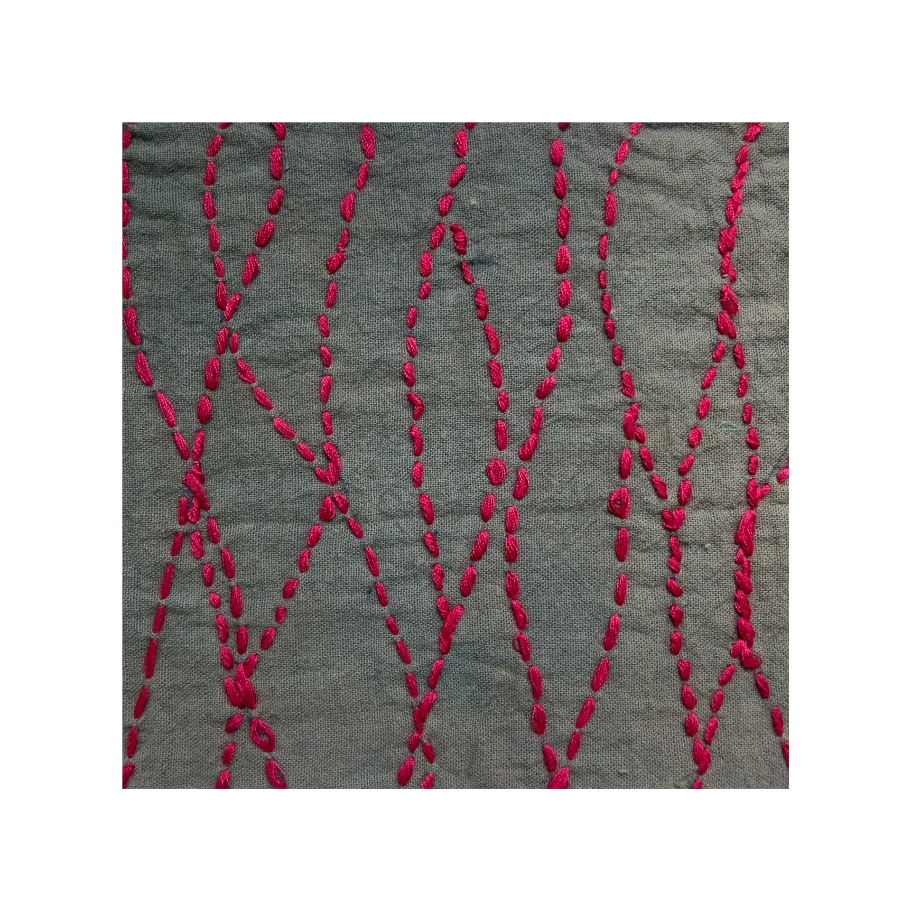
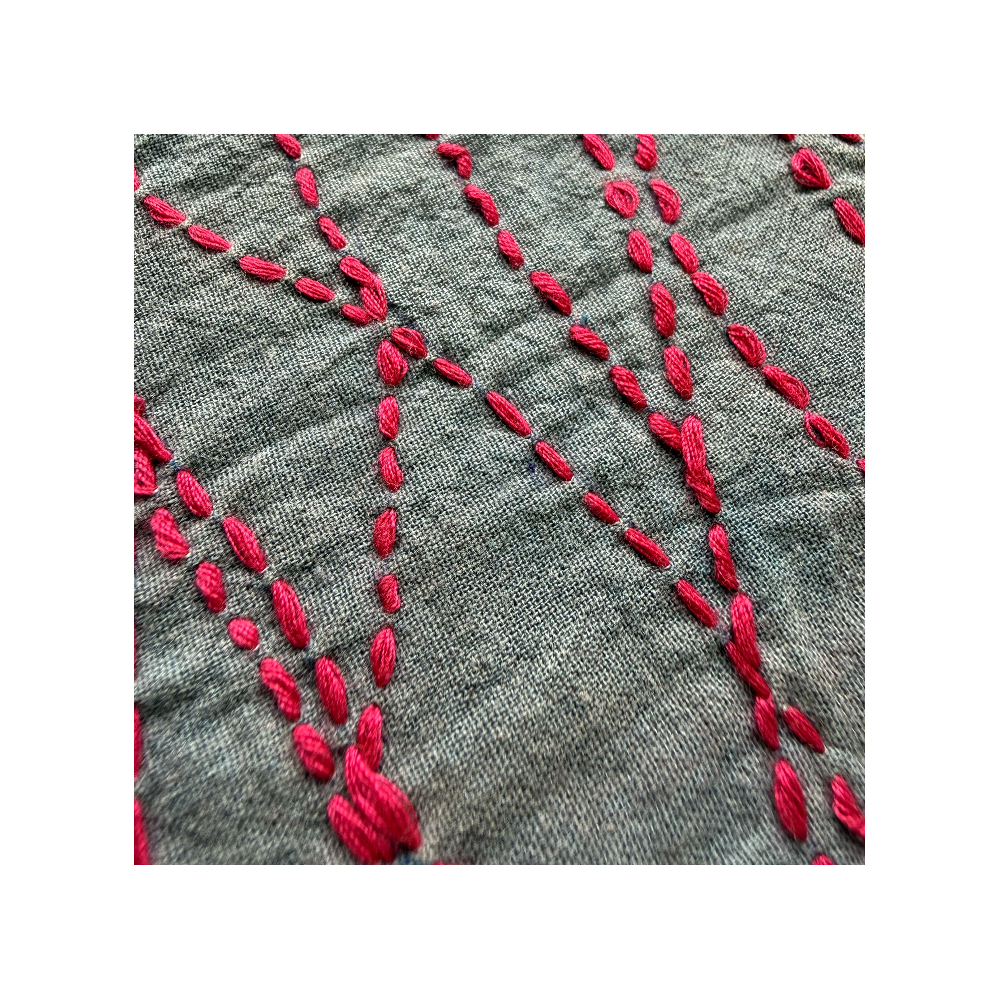
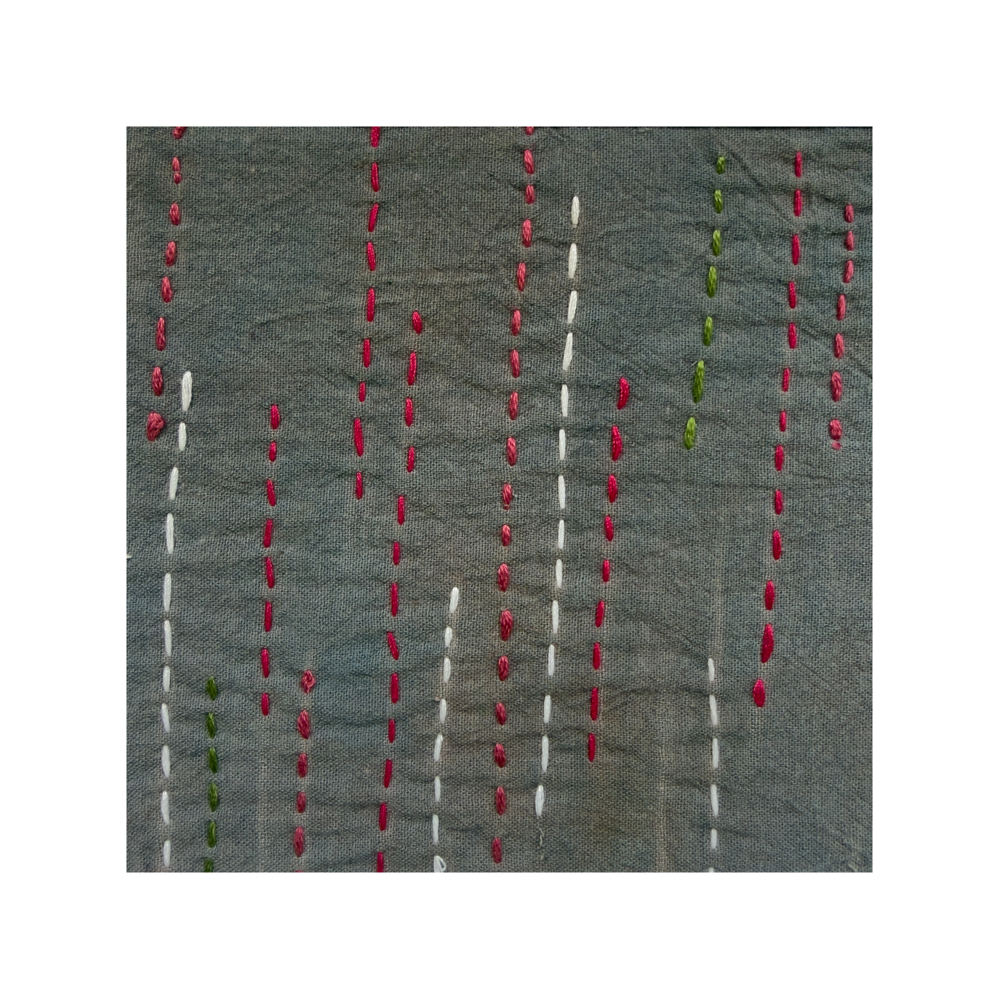
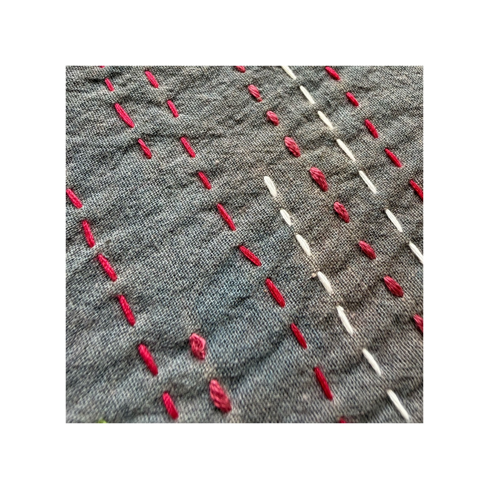
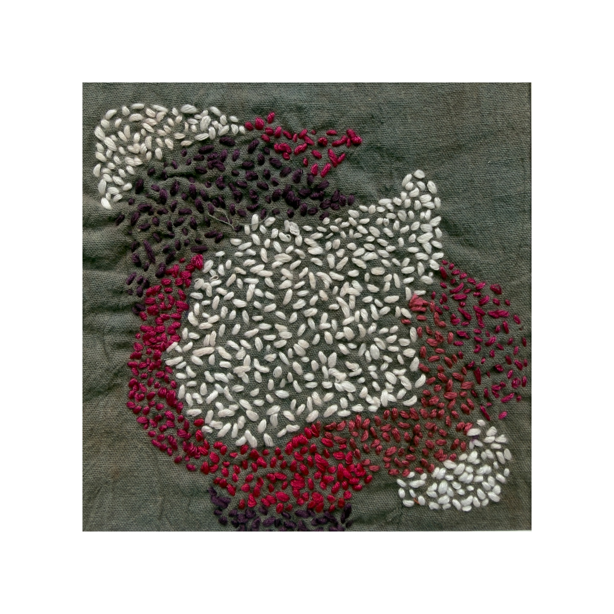
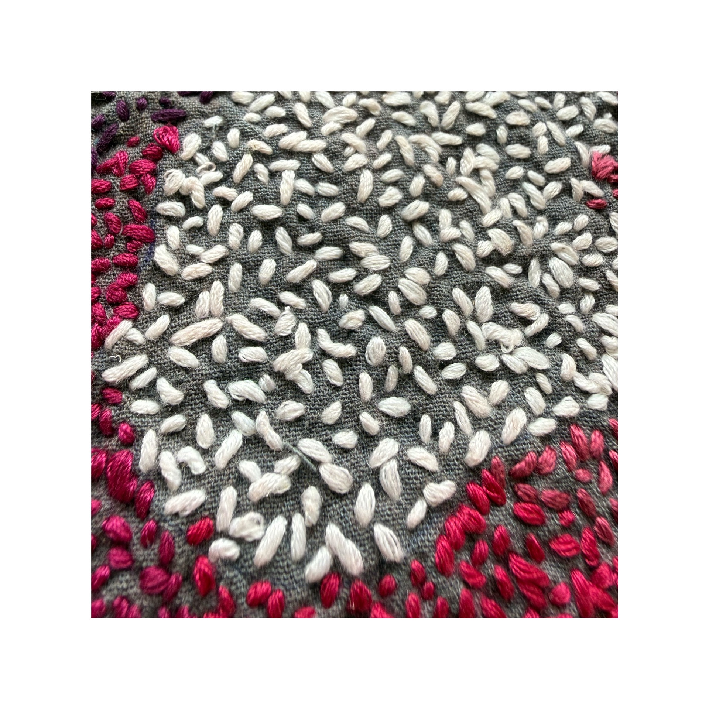

Surface Development
SURFACE DEVELOPMENT
This project was an exploration of the running stitch — one of the most fundamental stitches in embroidery — focusing on the many ways in which a single, simple stitch can be manipulated to create varied and unexpected surface textures. Rather than working with complex stitch vocabulary, the focus was entirely on understanding the creative potential that lies within repetition, direction, density and scale of one stitch, arriving at a range of distinctly different surfaces on the same fabric.







